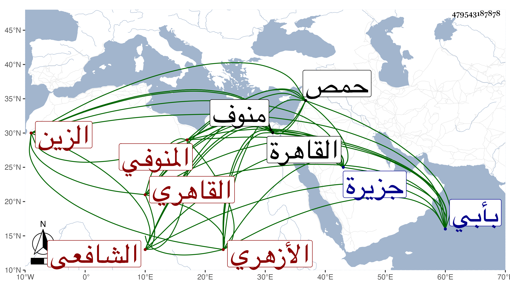

0902Sakhawi.DawLamic.ITO20230111-ara1.EIS1600.479543187878
Biography ID: 479543187878
656
خالد بن أيوب بن خالد الزين المنوفي ثم القاهري الأزهري الشافعي والد الشمس محمد والصلاح أحمد . ولد بعد القرن بيسير بأبي المشط من جزيرة بني نصر الداخلة في أعمال منوف وانتقل منها لمنوف فقرأ القرآن والعمدة عند الخطيب جمال الدين يوسف والد زين الصالحين وأخيه شرف الدين ، ثم قدم القاهرة فقطن جامع الأزهر وحفظ فيه المنهاج الفرعي والأصلي وألفية النحو وعرض على الولي العراقي وغيره واشتغل بالفقه على الشمس بن النصار المقدسي نزيل القطبية ، وكذا أخذ عن الشمس البرماوي في الفقه وغيره ، وحضر تقسيم التنبيه عند التلواني ولازم القاياتي حتى كان جل انتفاعه به وقرأ على التقي الشمني القطب شرح الشمسية في المنطق والمختصر في المعاني والبيان ، وسمع على الشمس الشامي الحنبلي بقراءة الكلوتاتي في سنة سبع عشرة بعض المقنع لابن قدامة ، وتصدى لنفع الطلبة فأخذ عنه جماعة ، وحج وولي مشيخة سعيد السعداء بعد ابن حسان بعناية الشرف الأنصاري وصار كل من واقفها وشيخها وخادمها ابن أيوب وهي اتفاقية حسنة ، وكان خيرا متواضعا كثير التلاوة والعبادة ملازما للصمت مع الفضل والمشاركة في فنون والغالب علي الصلاح والخير وكنت ممن أحبه في الله . مات في ثاني شوال سنة سبعين ودفن بتربة طشتمر حمص أخضر ، ونعم الرجل كان رحمه الله ونفعنا به .
